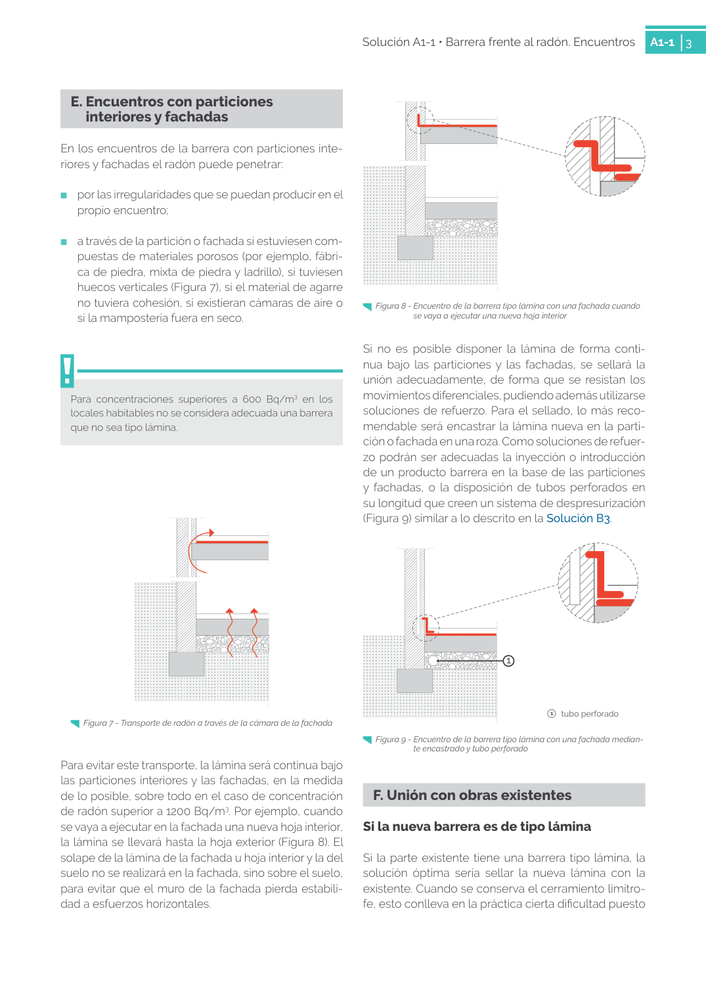

<!doctype html>
<html lang="es"><head><meta charset="utf-8">
<meta name="viewport" content="width=device-width, initial-scale=1">
<title>GUIA · Si la nueva barrera es de tipo lámina</title><link rel="stylesheet" href="../estilo.css">
</head><body>
<nav><a href="../index.html">Índice</a> › <a href="../doc/guia-pdf-f3314b0414fe-sin-fecha-e58e54b822cf.html">GUIA</a> › a0097</nav>

<header class="meta">
<p><a href="../doc/guia-pdf-f3314b0414fe-sin-fecha-e58e54b822cf.html">GUIA</a> · Si la nueva barrera es de tipo lámina · versión sin-fecha · capa guia</p>
</header>
<div class="cita"><strong>Cita:</strong> GUIA · ID técnico a0097 · Si la nueva barrera es de tipo lámina · páginas físicas pág. 33-34 (impresas: ['33', '34'])</div>
<p>Formatos: <a href="../../contenido/docs/GUIA-PDF-f3314b0414fe/sin-fecha__e58e54b822cf/apartado/a0097__si-la-nueva-barrera-es-de-tipo-lamina.json">JSON compacto</a> · <a href="../../contenido/docs/GUIA-PDF-f3314b0414fe/sin-fecha__e58e54b822cf/apartado/a0097__si-la-nueva-barrera-es-de-tipo-lamina.md">Markdown</a> · <a href="../../contenido/docs/GUIA-PDF-f3314b0414fe/sin-fecha__e58e54b822cf/fuente.pdf">PDF fuente</a></p>
<p><a href="../doc/guia-pdf-f3314b0414fe-sin-fecha-e58e54b822cf.html">Ámbito del documento</a> · <a href="../doc/guia-pdf-f3314b0414fe-sin-fecha-e58e54b822cf.html#ambito">texto del ámbito</a> ·
<a href="../doc/guia-pdf-f3314b0414fe-sin-fecha-e58e54b822cf.html">documento y tablas</a></p>
<nav><a href="guia-pdf-f3314b0414fe-sin-fecha-e58e54b822cf__a0096.html">← 1   tubo perforado F. Unión con obras existentes</a> <a href="guia-pdf-f3314b0414fe-sin-fecha-e58e54b822cf__a0098.html">1   	parte existente 2 	 ampliación →</a></nav>
<h1>Si la nueva barrera es de tipo lámina</h1>
<p>Tipo: tablas, figuras · nivel 3 · sección estimada: 1   tubo perforado F. Unión con obras existentes · padre: a0096</p>
<pre class="literal">Si la nueva barrera es de tipo lámina
Si la parte existente tiene una barrera tipo lámina, la
solución óptima sería sellar la nueva lámina con la
existente. Cuando se conserva el cerramiento limítro­
fe, esto conlleva en la práctica cierta dificultad puesto
Figura 7 - Transporte de radón a través de la cámara de la fachada
Figura 8 - Encuentro de la barrera tipo lámina con una fachada cuando
se vaya a ejecutar una nueva hoja interior
Figura 9 - Encuentro de la barrera tipo lámina con una fachada median­
te encastrado y tubo perforado

Solución A1-1 • Barrera frente al radón. Encuentros
A1-1
4
que implica la demolición de tramos del cerramiento
y constituye un riesgo de deterioro de la lámina exis­
tente. Por ello, la mejor solución será la de encastrar la
lámina nueva en el cerramiento limítrofe en una roza
por encima de la lámina existente (Figura 10).</pre>
<h2>Tablas en estas páginas</h2><ul><li>p. 33 · <a href="../../contenido/docs/GUIA-PDF-f3314b0414fe/sin-fecha__e58e54b822cf/tabla/p0033_t01.json">p0033_t01.json</a> · <a href="../../contenido/docs/GUIA-PDF-f3314b0414fe/sin-fecha__e58e54b822cf/tabla/p0033_t01.csv">.csv</a></li><li>p. 34 · <a href="../../contenido/docs/GUIA-PDF-f3314b0414fe/sin-fecha__e58e54b822cf/tabla/p0034_t01.json">p0034_t01.json</a> · <a href="../../contenido/docs/GUIA-PDF-f3314b0414fe/sin-fecha__e58e54b822cf/tabla/p0034_t01.csv">.csv</a></li></ul><h2>Página visual</h2><figure><a href="../../contenido/docs/GUIA-PDF-f3314b0414fe/sin-fecha__e58e54b822cf/figura/p0033.png"></a><figcaption>Página visual 33 (fuente para fórmulas/tablas/figuras)</figcaption></figure><figure><a href="../../contenido/docs/GUIA-PDF-f3314b0414fe/sin-fecha__e58e54b822cf/figura/p0034.png"></a><figcaption>Página visual 34 (fuente para fórmulas/tablas/figuras)</figcaption></figure><p class="aviso">PDF fuente redistribuible: copia fiel enlazada en esta página (SHA256 verificado).</p>
<footer>Generado estáticamente desde JSON normalizado; sin JavaScript ni servicios externos.
El JSON es la fuente; este HTML es caché reproducible.</footer>
</body></html>
